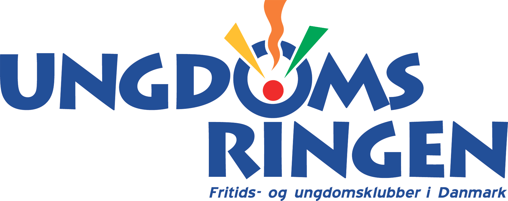

Case study
Ungdomsringens MusikFestival is an annual recurring youth music event in Aalborg organized by Ungdomringens Association. Our task was to create a reusable website for the festival, so the content could be replaced easily via WordPress whenever needed. The goal was to reflect festival's key values: music, youth life and social interaction through the design, content and functionality. My role on the project was coding what I really enjoyed despite having some difficulties with WordPress platform.
I structured written and visual content in HTML. I prefer to write as “dry” code as possible this way I minimize repetition of code so I usually look for the similar patterns first and then create styles accordingly. Next, I make the website dynamics with JavaScript. I structure most of the subpages except “Line-up”, where the artists are displayed.
Ungdomsringens MusikFestival
I structured the content in JavaScript despite I knew it will be challenging but I wanted to learn something new. I fetched data from WordPress API and displayed on our website. Thanks to this the website can be updated whenever needed. Based on user research I made count-down feature, that would make the website dynamic.
Code spippet
During this project I have learned how to structure content through JavaScript and fetch data from WordPress. Based on the feedback we might improve the design part of our website in the future, especially the readibility. I enjoyed working on this project as I am big fan of music festivals myself and I would definitely like to work on similar projects in the future.
Do you like my work?
Contact me here